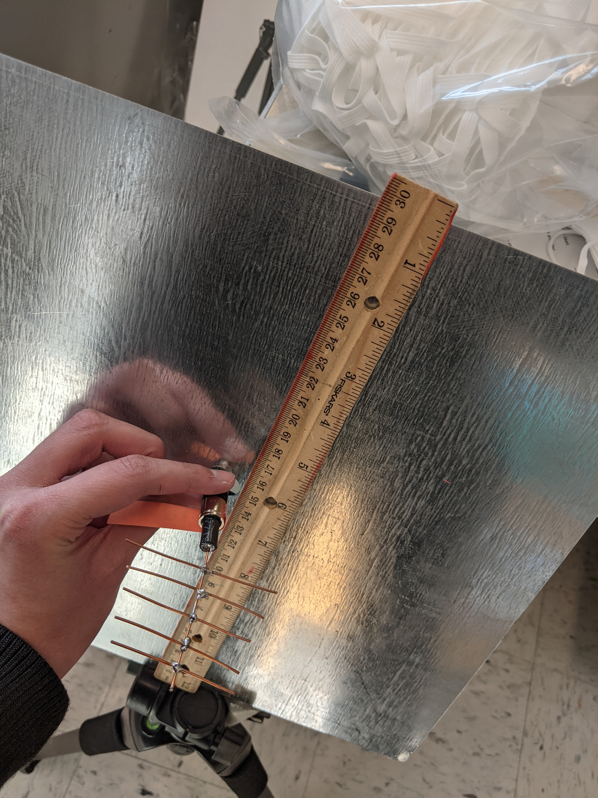

About Me
I am an ECE Junior in UIUC who is majoring in Electrical Engineering. Interested in the design aspects of the subject as in creating circuit schematics. On the Electrical Team in Solar Car and look forward to learning about the circuitry of the car.
Skills
Soldering - 1st in State Wifi Lab Science Olympiad
Figma (Software) - Participated in CSail IDEAthon
Technological Innovation - Course Assistant - ENG 177 Innovation Scholars at University of Illinois Urbana-Champaign
$250 Venture Support - COZAD
Skills:
Java, C, C++, Python, Kicad, soldering, Figma, HTML, CSS, Verilog, SystemVerilog
Interests:
Solar Car: Work with Kicad and soldering on the PCBs for the Solar Car Calypso
OSAI (Open Source@Illinois): Learned front-end web development, specifically HTML and CSS
SIGPwny: Attend CTF competitions and meetings that teach on cybersecurity
Electric Bass Guitar: Perform at UIUC events and local spaces in bands
Pictures


Job Experience
Course Assistant - ENG 177 Innovation Scholars
University of Illinois Urbana-Champaign · Part-time
Aug 2023 - Dec 2023 · One Semester
- Assist class and grade the students’ papers and projects. The coursework about entrepreneurship and innovation in engineering. Took the class in my first year and received an A grade as well as participating in the COZAD competition.
Engineering Learning Assistant - ENG 100 Engineering Orientation
University of Illinois Urbana-Champaign · Part-time
2024 Fall - Present · One Semester
- Lead the class, give presentations, grade papers, answer questions, and promote camaraderie amongst the first-year students. Help with the first-year orientation events, assist with departmental events, and mentor the students during mentoring meetings throughout the semester.
Education
University of Illinois Urbana-Champaign · Class of 2026
Bachelor of Engineering - BE, Electrical Engineering
I am pursuing a Computer Science minor as well and am in my 3rd year.
Honors
$250 Venture Support - COZAD
Issued by COZAD New Venture Challenge · April 2023
- Participated in the THINK Chicago event from the THINK Scholars program at UIUC. Interacted with guest speakers and reached out to employers in the Chicago area working on community outreach through engineering.
Participated in THINK Chicago
Issued by University of Illinois · November 2022
- Participated in the THINK Chicago event due to being enrolled in THINK Scholars first semester. Watched guest speakers and learned about the opportunities in Chicago.
Participated in CSail IDEAthon
Issued by University of Illinois · April 2022
- Created a front-end for a music recommendation algorithm through Figma software that would allow users to find new music; Learnt wire-framing, front-end design and UI/UX design.
1st in State Wifi Lab Science Olympiad
Issued by Science Olympiad Illinois State Competition · 2019
- The event involved building an antenna to meet specifications and exceed a target range as well as a written test. I was the head captain of the Science Olympiad team my senior year of high school.